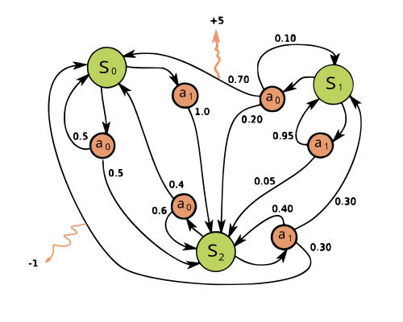
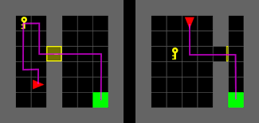
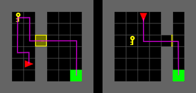
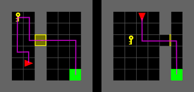

GENERAL INTRODUCTION: Reinforcement Learning & Multi-armed Bandits

Odalric-Ambrym Maillard
HORIBA
April 22, 2025

Reinforcement Trends

Applying RL to real world

Learning by trial and error, repeatedly

Frameworks
Markov Decision Processes

 



Multi-armed bandits

Game of Go

Many possible states (\(3^{19\times 19}\)).
Agriculture and Agroecology

From Planning and control to Personalized, contextual Learning.
Microscopy parameter tuning: Sequential optimization

Confidence Sets
Empirical mean estimate \(\hat \theta_{t}\) built from observations.
Build set \([\hat \theta_{t}^-,\hat \theta_{t}^+]\) containing \(\theta\) with high probability.
In higher dimensions: